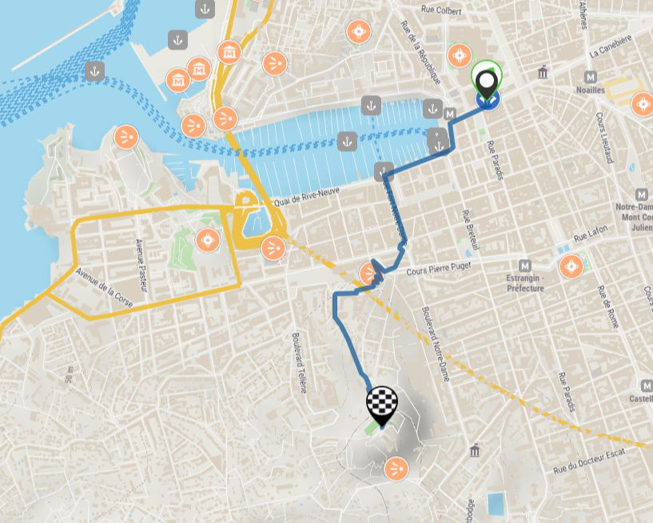
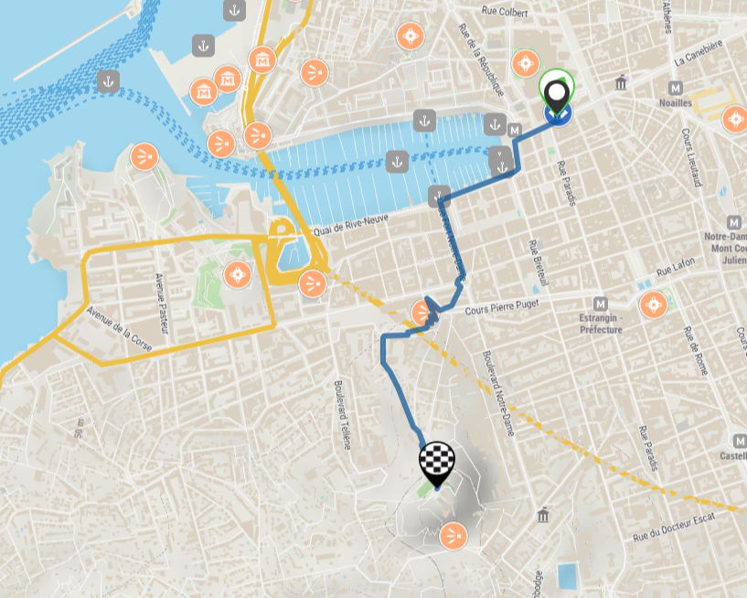

-
Distance
6.6 km (Boucle) -
Durée
3 heures -
Difficulté
Moyen -
Départ
Iles du Frioul
Découvrez l'île de Ratonneau, une perle de l'archipel du Frioul. L'île tire son nom de son histoire
intrigante : au XIIIème siècle, elle était envahie par les rats, donnant naissance au nom "portus
Ratonelli" pour son port, qui finira par désigner toute l'île.
Au cours de cette randonnée de 6.6 km, vous explorerez de magnifiques criques, des vestiges de
fortifications militaires et l'hôpital Caroline, qui a jadis soigné les patients atteints de la
fièvre jaune.
La première partie de la randonnée, jusqu'à l'hôpital Caroline, est plate et convient à tous les
niveaux de randonneurs.
Point de Départ : Débarcadère du bateau sur l'archipel du Frioul, suivez le chemin goudronné en
direction de la plage Sainte-Estève et de l'hôpital Caroline.
Période Recommandée : Toute l'année, sous réserve de conditions météo favorables.
Explorez ce paysage magnifique avec un arrêt de transport en commun à moins de 500 mètres, un port
de plaisance à moins de 500 mètres, une plage à moins de 300 mètres, une vue sur la mer, un
embarcadère à moins de 500 mètres, une vue panoramique et un littoral enchanteur.
 
